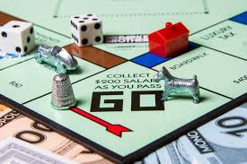

Board games have been around for thousands of years. They bring people together, and have recently grown in popularity. Though the games change and evolve, there are some that have withstood the test of time.
| Game Title | Genre | Player Count | Play Time | Recommended Age |
|---|---|---|---|---|
| Small World | Strategy | 2-5 | 1 hr. | 8+ |
| Photosynthesis | Strategy | 2-4 | 45 min. | 8+ |
| Six Second Scribbles | Family | 2-8 | 20 min. | 8+ |
| Chutes and Ladders | Race Game | 2-4 | 20 min. | 3+ |
We all love a classic board game! Click the pictue below to be directed to a website to play classic board games online.
One way modern board games have increased in popularity is through videos on YouTube. Many people search for videos of games being played before purchasing them. There are also many websites that enable people to play their favorite board games digitally with other people from all over the world!